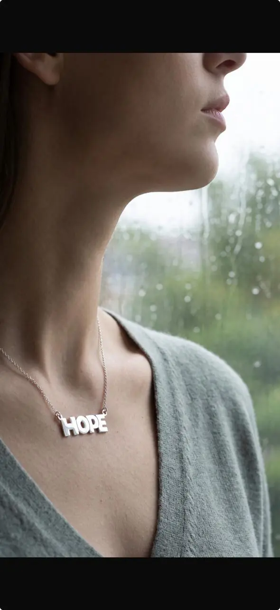
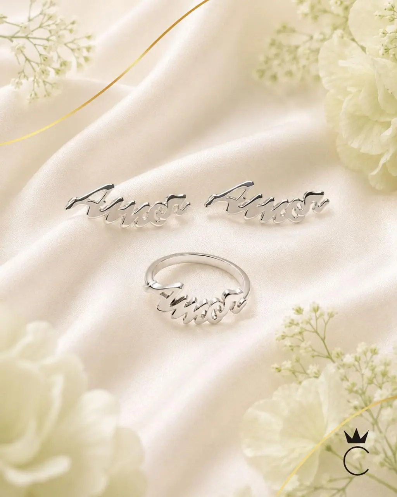
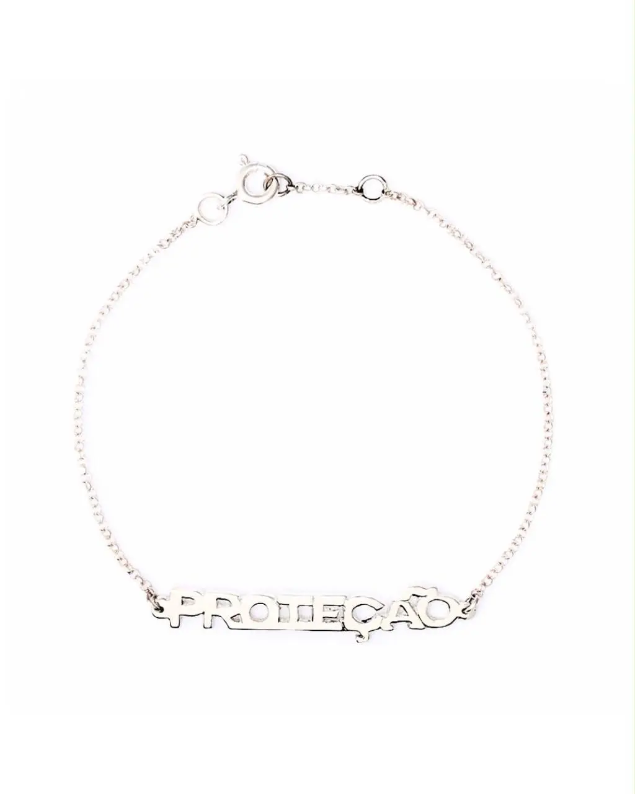
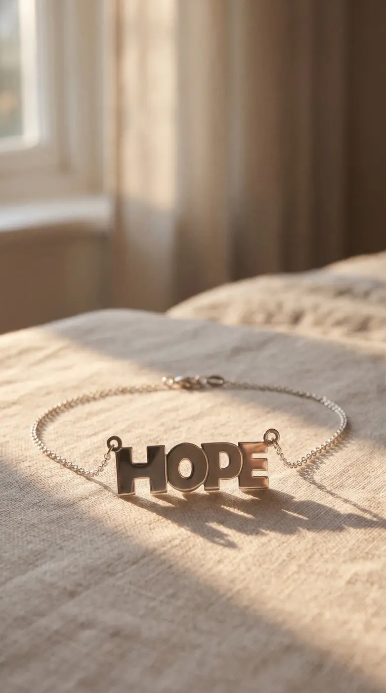
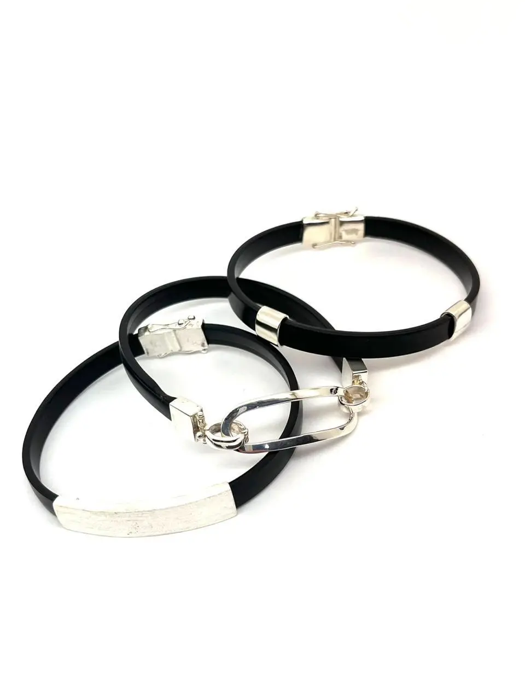
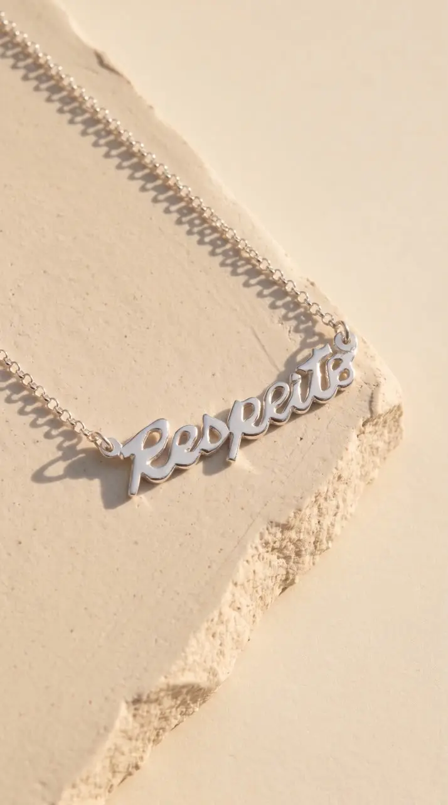
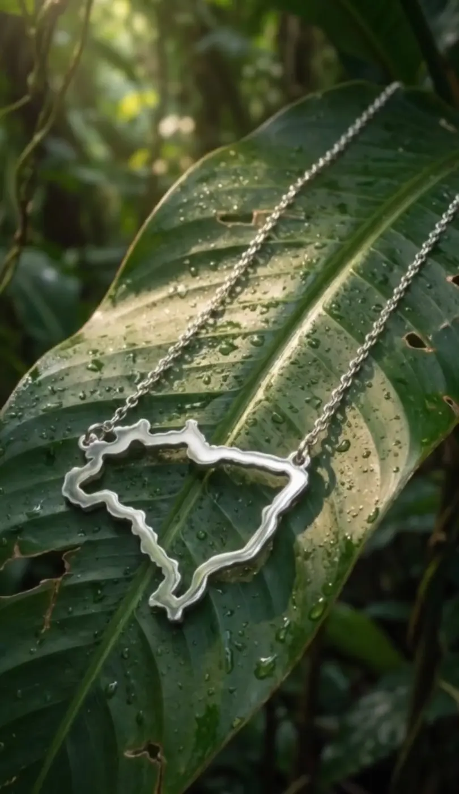

FOTO REAL · PRATA 925
FOTO REAL · PRATA 925COLAR
Colar Vida G
Criado por Lydia Sayeg exclusivamente para Hebe Camargo, este símbolo de amizade e força é confeccionado artesanalmente em Prata 925 e possui aproximadamente 47 cm.
Peças de luxo em prata, criadas para celebrar vínculos, conquistas e memórias que atravessam gerações.
CONHEÇA AS JOIASA Celebrity nasceu em 1995 com uma visão: criar joias que vão além do adorno. Cada peça traduz personalidade, afeto e momentos que merecem permanecer.
Sob a curadoria de Lydia Sayeg, a marca une desenho autoral, produção artesanal e a força de histórias brasileiras — incluindo o legado afetivo de Hebe Camargo.
“A joia tem valor quando se conecta à história de quem usa.”LYDIA SAYEG
Conheça cada peça por meio de fotografias reais. Toque nas miniaturas para ver outros ângulos antes de escolher nos canais oficiais.
FOTO REAL · PRATA 925Criado por Lydia Sayeg exclusivamente para Hebe Camargo, este símbolo de amizade e força é confeccionado artesanalmente em Prata 925 e possui aproximadamente 47 cm.
 FOTO REAL · PRATA 925
FOTO REAL · PRATA 925Com a caligrafia de Lydia Sayeg, a palavra Futuro é confeccionada à mão em Prata 925. A peça possui aproximadamente 45 cm e celebra aquilo que ainda podemos construir.
 FOTO REAL · PRATA 925
FOTO REAL · PRATA 925Uma palavra para carregar perto do coração. Feito artesanalmente em Prata 925, representa luta, liberdade e superação, com aproximadamente 45 cm.

FOTO REAL · PRATA 925A palavra Hope em uma joia de presença delicada, apresentada em diferentes detalhes para facilitar sua escolha.

FOTO REAL · PRATA 925Uma composição que celebra o afeto, fotografada sobre tecido de seda para destacar o acabamento das peças.

FOTO REAL · PRATA 925Uma palavra de significado forte transformada em joia para acompanhar histórias e momentos especiais.

FOTO REAL · PRATA 925A palavra Hope em uma pulseira delicada, fotografada sob luz natural para evidenciar seus detalhes.

FOTO REALPulseira preta com detalhes prateados e visual contemporâneo. Consulte os canais oficiais para conhecer as opções.

FOTO REAL · PRATA 925A palavra Respeito em uma peça de traço marcante, apresentada sob luz natural para destacar o acabamento.

FOTO REAL · PRATA 925O contorno do Brasil transformado em uma joia de identidade e afeto, apresentado em três fotografias para revelar seus detalhes.
Lydia Sayeg desenhou o Colar Vida exclusivamente para Hebe Camargo em um momento desafiador. Hoje, o símbolo de amizade e força ganha versão em Prata 925.

Uma joia.
Um gesto.
Um legado.
Informação clara para escolher, usar e preservar sua peça.
Uma liga com 92,5% de prata pura e 7,5% de outros metais, combinação que oferece resistência e beleza.
Sim. A oxidação é natural e não representa perda de qualidade. Uma flanela própria costuma devolver o brilho.
Evite perfumes, cremes, produtos químicos, mar e piscina. Guarde cada peça limpa, seca e separadamente.
Por serem artesanais, pequenas diferenças podem ocorrer e fazem parte da singularidade de cada peça.
Este site apresenta a marca e os produtos. As vendas são realizadas exclusivamente nos marketplaces oficiais, com segurança e conveniência.
Compra segura, entrega acompanhada e toda a conveniência da Amazon.com.br.
ACESSAR AMAZON.COM.BR ↗ mercadolivre.com.br
mercadolivre.com.brAgilidade na entrega e atendimento dentro da plataforma brasileira.
ACESSAR MERCADOLIVRE.COM.BR ↗Nossa equipe ajuda com medidas, materiais, conservação e disponibilidade.
WhatsApp +55 11 97150-0663E-mail contato@celebrity.com.brEste site institucional não cria contas, não processa pagamentos e não armazena os dados preenchidos no formulário. Ao escolher o contato por WhatsApp ou e-mail, você será direcionado ao respectivo serviço externo. Caso sejam adicionadas ferramentas de análise, publicidade ou venda, esta informação deverá ser atualizada antes da publicação.